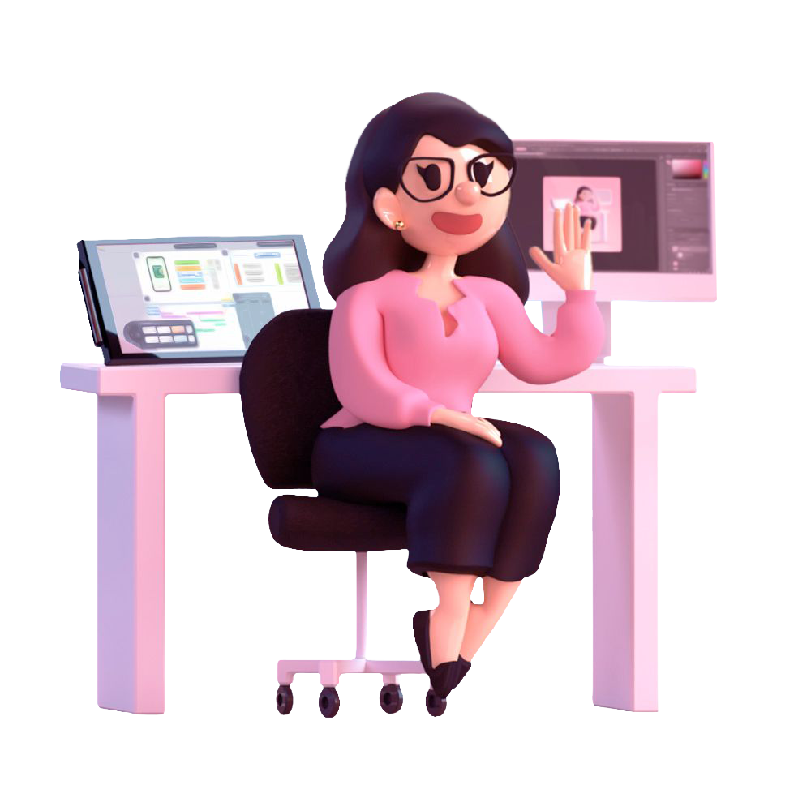

LAUREN LEVEN / VISUAL & PRODUCT DESIGNER
I design things
worth exploring.
UX, interfaces, and illustration with a little personality. I make complicated ideas easier to use, and a lot more interesting to look at.
IN MOTION

01 / THE WORK
Good design starts
with a good question.
From clinical tools to cruise ship screens, I work on the moments where a thoughtful design decision makes a complicated task feel simple.
02 / AFTER HOURS · BY NIGHT
Beyond the brief.
A meal-planning app, game-world concepts, and illustrations I couldn't leave alone. This is where I follow the interesting ideas.
03 / LET'S CONNECT
Curious by default.
Intentional by design.
Hey, I'm Lauren! I'm a visual and product designer near Orlando. I've worked on construction software, healthcare tools, and experiences for cruise passengers. Different audiences, same favorite challenge: making something complicated feel approachable.
I pay attention to the places where people get stuck. Maybe it's a label that needs a better word, or a screen trying to do too much. I enjoy finding the simpler solution and making it feel considered.
Outside of work, I'm usually drawing, building elaborate things in games, or turning a small idea into a much bigger side project than I planned.
ODDS, ENDS & ESSENTIALS
My inventory
The essentials, more or less. Tap to inspect.
Where the wireframes, UI ideas, and probably-too-many iterations live.